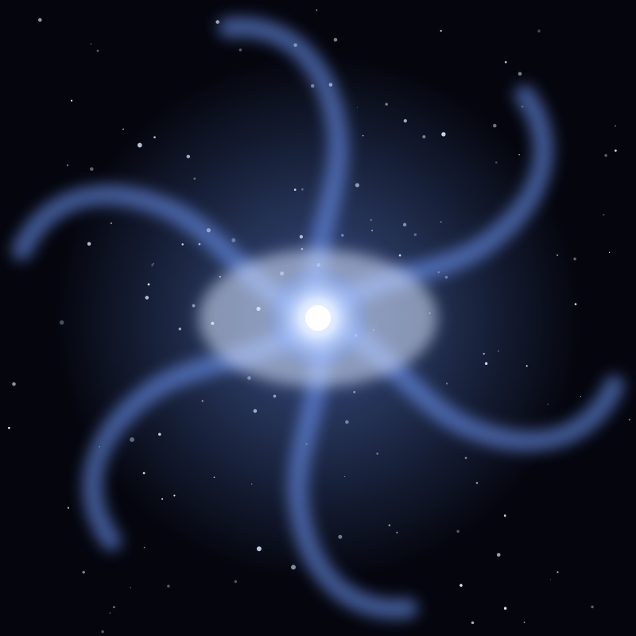

Galaxy
Triangulum Galaxy
The third-largest galaxy in our Local Group and the most distant object visible to the naked eye, 2.7 million light-years away.
Object 25 of 26

Key facts
- Distance
- 2.73 million light-years
- Diameter
- ~60,000 light-years
- Type
- Spiral (SA(s)cd)
- Stars
- ~40 billion
- Catalogue
- Messier 33
- Group
- Local Group (third largest)
- Constellation
- Triangulum
- Discovery
- 1654, Giovanni Hodierna
Overview
The Triangulum Galaxy is the third-largest galaxy in our Local Group, after Andromeda and the Milky Way. It lies 2.73 million light-years away and is seen almost exactly face-on, so its spiral structure is on full display.
It is one of the most distant objects visible to the unaided eye, appearing as a faint smudge of magnitude 5.7 under a truly dark sky — a view humans have had for as long as there have been humans, though it was not recognised as a galaxy until the 20th century.
Structure
M33 has loosely wound, fragmented arms and no obvious central bulge, giving it a softer appearance than the grand spirals. It is small and diffuse compared with Andromeda, containing perhaps 40 billion stars to Andromeda's trillion.
Its most striking feature is NGC 604, one of the largest star-forming regions in the Local Group. Stretching about 1,500 light-years across, it is roughly 100 times the size of the Orion Nebula and contains more than 100 massive young stars.
A Run on the Distance Ladder
Because M33 is relatively close and rich in variable stars, Cepheids and red giants, it became an important stepping stone in measuring cosmic distance. Disagreements over its exact distance — estimates have ranged from 2.3 to 3.2 million light-years — made it a test case for calibrating the methods used to measure the whole universe.
It may be a companion of Andromeda or an independent member of the Local Group falling in for the first time; its motion suggests the two have interacted in the past.
How to See It
M33 is found in the small constellation Triangulum, near Andromeda. Binoculars reveal it as a soft oval glow, and a small telescope shows the brighter star-forming knots within the arms.
It is a favourite autumn and winter target, best placed high in the sky on clear moonless nights. Photographers find it a rewarding challenge, since long exposures reveal the spiral arms that the eye can only guess at.